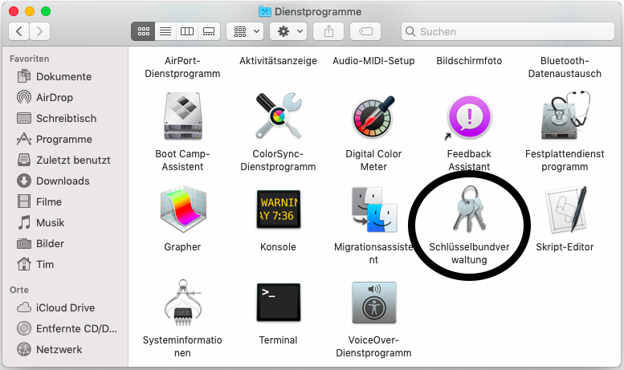
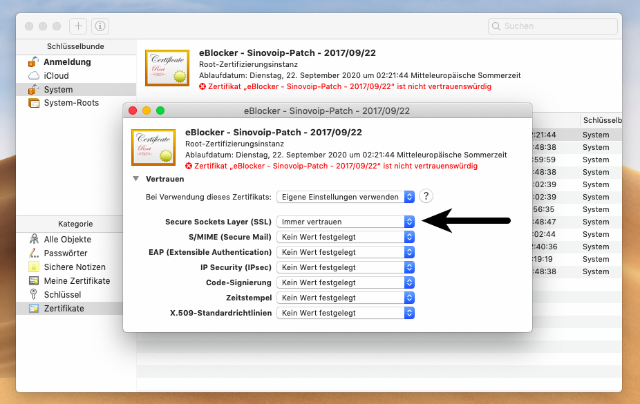

Deutsch | English
eBlocker Hilfe > FAQs > HTTPS Funktion (SSL/HTTPS)
Das eBlocker Zertifikat in macOS hinterlegen.
Mit nur wenigen Schritten haben Sie das Zertifikat hinterlegt. Benutzen Sie dafür bitte den macOS Safari Browser.
Öffnen Sie die eBlocker HTTPS Konfigurationsseite, oder das eBlocker Dashboard.
Klicken Sie in auf der HTTPS Konfigurationsseite auf den Button HTTPS ASSISTENT STARTEN, oder in dem eBlocker Dashboard in der HTTPS Karte auf den Link HTTPS ASSISTENT STARTEN.
Der Assistent wird Ihnen Schritt für Schritt aufzeigen, wie Sie das eBlocker Zertifikat in macOS hinterlegen.
Alternativ können Sie das eBlocker Zertifikat auch ohne den Assistenten hinterlegen.
- Klicken Sie auf der HTTPS Konfigurationsseite auf den Reiter ZERTIFIKAT.
- Nun klicken Sie auf den Button HERUNTERLADEN. Gegebenenfalls kann man das Zertifikat auch mit einem Rechtsklick auf den Button und dann Speichern unter herunterladen.
- Öffnen Sie die Schlüsselbundverwaltung unter Programme/Dienstprogramme.

- Wählen Sie Schlüsselbund System und die Kategorie Zertifikate aus.

- Wählen Sie im Menü Ablage / Objekte importieren... aus.

- Im Datei-Dialog wählen Sie das heruntergeladene eBlocker-Zertifikat (caCertificate.crt) aus Ihrem Downloads-Ordner und klicken Sie auf Öffnen.
- Eventuell werden Sie nach dem Administrator-Passwort gefragt.
- Doppeklicken Sie auf das importierte eBlocker-Zertifikat in Liste.
- Wählen Sie Immer vertrauen in der Auswahlbox Secure Sockets Layer (SSL) aus.

- Schließen Sie das Fenster. Geben Sie bitte das Administrator-Passwort ein, nach dem Sie eventuell gefragt werden.
Das eBlocker-Zertifikat ist nun in macOS hinterlegt. Die meisten Browser und Programme können jetzt auf das eBlocker-Zertifikat zugreifen.
Mit den folgenden Browsern können Sie die eBlocker Controlbar nun auf HTTPS-Seiten sehen:
- Safari
- Google Chrome
- Opera
- Vivaldi
- Yandex
Für folgende Browser und Programme muss das eBlocker-Zertifikat in dem betreffenden, eigenen Zertifikatsspeicher hinterlegt werden.
- Firefox
- Cliqz (basiert auf Firefox)
- Seamonkey
- Thunderbird (E-Mail Programm)